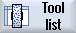

|  ... | 1. | The tool list, the wear list, the OEM tool list or the magazine opens. |
| | 2. | Position the cursor in the column "Type" of the tool that you wish to change. |
 | 3. | Press the <SELECT> key. The "Tool Types - Favorites" window opens. |
| | 4. | Select the desired tool type in the list of favorites or select by pressing the "Grinders 400-499" or " Spec. tool 700-900" softkey. |
 | 5. | Press the "OK" softkey. The new tool type is accepted and the corresponding icon is displayed in the "Type" column. |